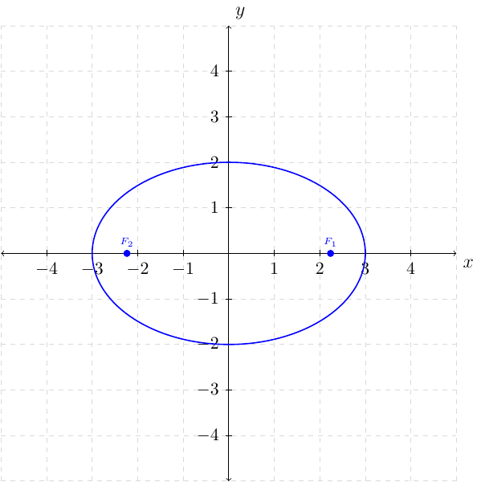
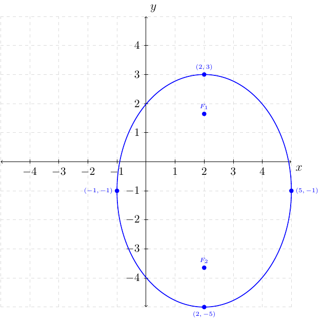

Section 6.2
Definition 66 (Ellipse)
An ellipse is the set of all points in a plane the sum of whose distances from two fixed points is constant. Each fixed point is a focus (plural, foci) of the ellipse.
Definition 67 (Standard Forms of Equations for Ellipses)
The ellipse with center at the origin and equation
where \(a>b\) has vertices \((\pm a,0)\), endpoints of the minor axis \((0,\pm b)\), and foci \((\pm c,0)\), where \(c^{2}=a^{2}-b^{2}\).
The ellipse with center at the origin and equation
where \(a>b\) have vertices \((0,\pm a)\), endpoints of the minor axis \((\pm b,0)\), and foci \((0,\pm c)\), where \(c^{2}=a^{2}-b^{2}\).
Definition 68 (Standard Forms of Equations for Ellipses Centered at \((h,k)\))
An ellipse with center at \((h,k)\) and either a horizontal or vertical major axis of length \(2a\) satisfies one fo the following equations, where \(a>b>0\) and \(c^{2}=a^{2}-b^{2}\) with \(c>0\).
Ellipses with major axis horizontal, vertices at \((h\pm a,k)\), and foci \((h\pm c,k)\) is
Ellipses with major axis vertical, vertices at \((h,k\pm a)\), and foci \((h,k\pm c)\) is
Example 124
Graph, find the foci, the domain, and range for the ellipse
Solution:
If we divide the equation by \(36\) from both sides we have
This means the \(x\) intercepts are at \((\pm \sqrt{9},0)=(\pm3,0)\) and the \(y\) intercept is at \((0,\pm \sqrt{4})=(0,\pm2)\).
This also means the foci is found by evaluating \(c^{2}=9-4=5\) and \(c=\sqrt{5}\). Since \(9>4\) the foci will be at \((\pm c,0)=(\pm \sqrt{5},0)\).
The major axis is along the \(x\)-axis and the minor axis is along the \(y\).
Plotting the foci, \(x\) and \(y\) intercepts we have:

Example 125
Write an equation of the ellipse having center at the origin, foci at \((-5,0)\) and \((5,0)\), and major axis of length \(18\) units.
Solution:
We are given \(c=5\) and the major axis is along the \(x\) axis. The equation of the ellipse will be of the form
Since the length along the major axis is 18 units we know that the \(x\) intercepts will occur at \((\pm \frac{18}{2},0)\) where
That is, the \(x\) intercepts are at \((\pm 9,0)\). Since \(c=5\) and \(c^{2}=a^{2}-b^{2}\) where \(a=9\) we can solve for \(b^{2}\)
Now that we have: \(a^{2}=81\) and \(b^{2}=56\) we can construct the ellipse equation
To find the domain and range of the ellipse we first identify all of the \(x\) and \(y\) intercepts. We know that the \(x\) intercepts are \((\pm 9,0)\). This means the domain of the ellipse is the set of all \(x\) such that \(-9\le x\le9\) or \([-9,9]\). We know the \(y\) intercepts are at \((0,\pm \sqrt{56})=(0,\pm 2 \sqrt{14})\) . This means the range of the ellipse is the set of all \(y\) such that \(-2\sqrt{14}\le y\le2\sqrt{14}\) or \([-2\sqrt{14},2\sqrt{14}]\).
Example 126
Graph \(\dfrac{(x-2)^{2}}{9}+\dfrac{(y+1)^{2}}{16}=1\). Give the foci, domain, and range.
Solution:
The graph of the ellipse is centered at \((2,-1)\) where \(a=\sqrt{16}=4\) and \(b=\sqrt{9}=3\). This ellipse have a major axis along the \(y\) axis. That is, the \(y\) vertices are at \((2,\pm4-1)=\begin{cases} (2,3)\\ (2,-5) \end{cases}\) and the \(x\) vertices are at \((\pm3+2,-1)=\begin{cases} (5,-1)\\ (-1,-1) \end{cases}\).
For the foci:
Since the major axis is vertical and \(c=\sqrt{7}\) and have a horizontal shift of right 2 we know the foci is located at \((2,\pm\sqrt{7}-1)=\begin{cases} (2,\sqrt{7}-1)\\ (2,-\sqrt{7}-1) \end{cases}\).
For the domain we have \([-1,5]\) and the range is \([-5,3]\) by looking at the vertices.
The graph of the ellipse is the following:

Example 127
Write the equation of the ellipse in standard form. Give the center, vertices, and endpoints of the minor axis.
Solution:
First, we will want to use completing the square
\(a=\sqrt{64}=8\) and \(b=\sqrt{16}=4\), which means
The center is at \((-3,4)\).
The vertices are at
The endpoints of the minor axis is